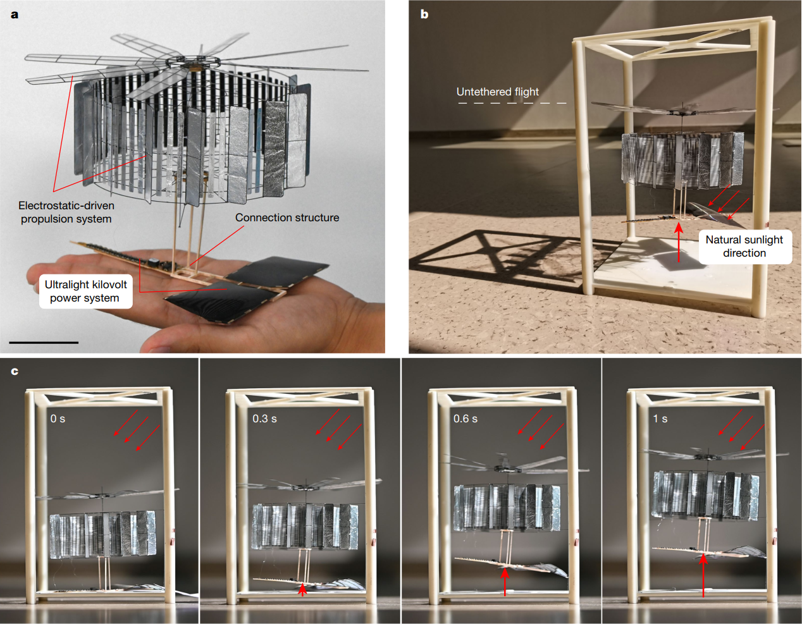
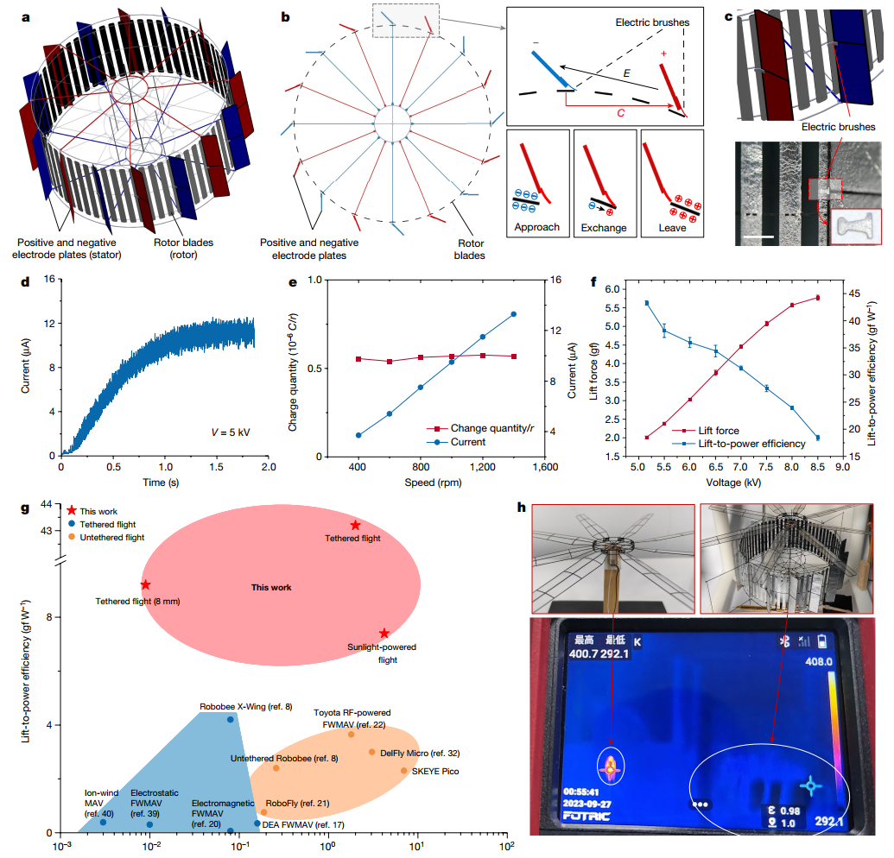
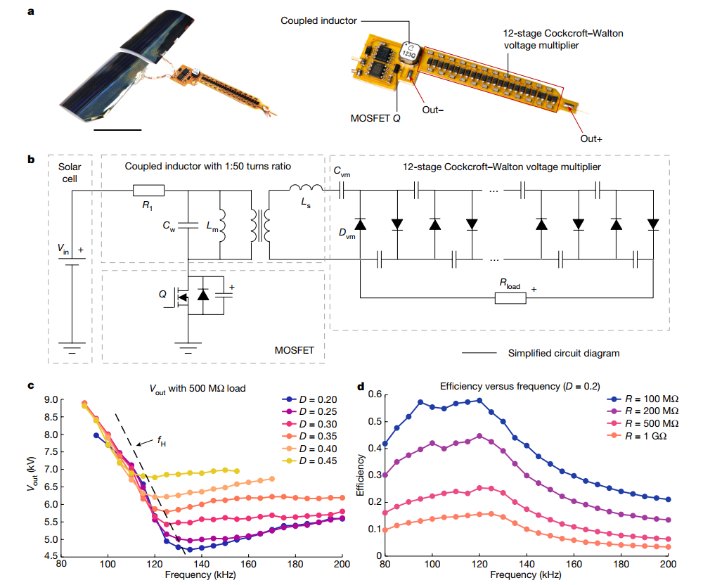
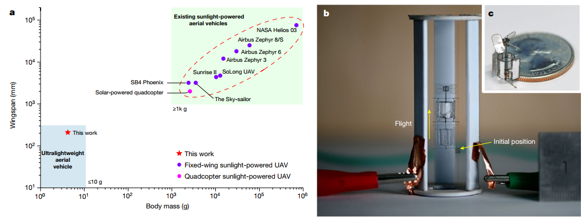

| Title | Sunlight-powered sustained flight of an ultralight micro aerial vehicle（太阳能驱动的超轻型微型飞行器持续飞行） |
| Authors | Wei Shen†、Jinzhe Peng†（共同一作），Rui Ma，Jiaqing Wu，Jingyi Li，Zhiwei Liu，Jiaming Leng，Xiaojun Yan（corresponding），Mingjing Qi（corresponding） |
| Affiliation | 北航（Beihang University），能源与动力工程学院 / 航空发动机协同创新中心 / 航空发动机气动热力国家级重点实验室 / 北京市航空发动机结构与强度重点实验室 |
| Venue | Nature，2024年7月，Vol. 631，pp. 537–542 |
| DOI / Links | 10.1038/s41586-024-07609-4 | Received: 2024-01-29 | Accepted: 2024-05-23 | Published: 2024-07-17 |
| TL;DR | 提出 CoulombFly——世界上首架完全靠自然太阳光实现无系留持续飞行的超轻型 MAV（仅 4.21 g / 20 cm 翼展）。核心创新：静电电机 + 超轻型千伏电源系统，升力-功率效率高达 30.7 g/W，是传统电磁电机方案的 2~3 倍，且几乎不发热。将太阳能飞行器从米级/公斤级缩小到厘米级/克级（1/600 质量）。 |
| Inspiration Source | → What Insight It Inspired | Type |
|---|---|---|
| 静电电机历史（Jefimenko, 18 世纪起）与 MEMS 静电微电机 | → 静电电机在小尺度下具有天然优势：无绕组、结构简单、低电流——但此前从未被用于飞行器推进。将 MEMS 领域的成熟原理"逆向放大"到厘米尺度 MAV，可以同时获得高效率与足够推力 | 架构 |
| 电刷式电荷转移 vs 电晕放电 | → 传统静电电机依赖电晕效应进行电荷转移，电压损耗大、效率低。用机械电刷（20 μm 铝箔激光切割）替代电晕放电，虽然引入微小摩擦但消除了巨大的电压损耗，使得电机可以在 5~9 kV 下高效运转 | 方法 |
| Cockcroft-Walton 电压倍增器（1932 年诺贝尔奖相关工作） | → 将 12 级 Cockcroft-Walton 倍增器与 forward-flyback 拓扑结合，利用耦合电感的寄生参数（无需独立磁化电感），在 1.13g 内实现 900~2000 倍升压比（4.5 V → 9 kV），电压-质量比 7.09 kV/g，比此前最轻的高压发生器轻 55% | 数学 / 电路 |
| 砷化镓（GaAs）薄膜太阳能电池（航天级） | → 能量转换效率 30%、功率密度 0.8 W/g——在自然光照（1 sun = 920 W/m²）下即可驱动整个系统，不需要激光或聚光器（3 sun），真正实现了"自然光自由飞行" | 策略 |
flowchart TB
subgraph ENERGY["能量采集层 (0.96 g)"]
SUN["自然太阳光 · 920 W/m² · 48°入射角"]
GAAS["GaAs 薄膜电池 ×2 · 0.48g/片 · 效率30%"]
end
subgraph POWER["电力变换层 (1.13 g · 0.568 W)"]
INPUT["输入: 4.50 V DC · 开路 6.04 V"]
COUPLED["耦合电感 1:50 · 前向反激拓扑 · 86 kHz"]
CW["12级 CW 倍压器 · 每级 2C+2D · 升压 900~2000 倍"]
OUTPUT["输出: 9.0 kV · 7.09 kV/g 电压质量比"]
end
subgraph MOTOR["静电驱动层 (1.52 g · 0.137 W)"]
STATOR["定子: 8对正负电极 · 环形交替 · 碳纤维+铝箔"]
FIELD["16个周向静电场 · 9 kV 驱动 · 库仑力 F=qE"]
ROTOR["转子: 64叶片 · 20μm碳纤维+1μm铝箔 · 玻纤连接环"]
BRUSH["电刷: 2mm铝箔 · 软接触电荷转移 · 替代电晕放电"]
end
subgraph THRUST["气动升力层 (0.44 g)"]
PROP["螺旋桨 R=100mm · 最大升力 5.8g · 升重比 2.9"]
LIFT["整机 4.21g · 推进1.96+电源2.09+结构0.16"]
end
SUN --> GAAS
GAAS --> INPUT
INPUT --> COUPLED --> CW --> OUTPUT
OUTPUT --> STATOR
STATOR --> FIELD --> ROTOR --> BRUSH
BRUSH --> PROP
PROP --> LIFT
LIFT -.->|"反馈: 1h无衰减 · 不发热"| ROTOR
OUTPUT -.->|"效率24.1% · 可优化至58%"| CW
ROTOR -.->|"堵转电流≈0 · 本质安全"| FIELD
classDef solar fill:#fef7ed,stroke:#f59e0b,stroke-width:2px,color:#92400e
classDef power fill:#e8f0fe,stroke:#3b82f6,stroke-width:2px,color:#1d4ed8
classDef motor fill:#f0ebfd,stroke:#8b5cf6,stroke-width:2px,color:#6d28d9
classDef thrust fill:#e6f7ee,stroke:#10b981,stroke-width:2px,color:#047857
classDef result fill:#dbeafe,stroke:#2563eb,stroke-width:2px,color:#1e40af
class SUN,GAAS solar
class INPUT,COUPLED,CW,OUTPUT power
class STATOR,FIELD,ROTOR,BRUSH motor
class PROP thrust
class LIFT result
flowchart TB
subgraph OPTICAL["光能 → 电能"]
direction LR
SUN["太阳光 920 W/m²"] --> PV["GaAs电池×2 · 4.50V · ~0.57W"]
end
subgraph CONV["DC-DC升压 (HVPC 1.13g)"]
direction LR
MOSFET["MOSFET斩波 86kHz"] --> XFMR["耦合电感 1:50"] --> CWLADDER["12级CW倍增器 900~2000倍"] --> HVOUT["高压输出 9.0kV"]
end
subgraph MOTOR["静电电机 (1.52g)"]
direction LR
ESTATOR["定子: 16个交替电场 · F=qE"] --> EROTOR["转子+电刷: 64叶片 · 电荷转移"] --> ETORQUE["扭矩: 恒定 · 转速自适应"]
end
subgraph AERO["螺旋桨 + 飞行"]
direction LR
EPROP["螺旋桨 R=100mm · 升力5.8g · 效率30.7g/W"] --> EFLIGHT["持续飞行 · 1秒起飞 · ≥1小时"]
end
subgraph CONTRAST["对比: 电磁 vs 静电"]
EM_MOTOR["电磁电机 SKEYE Pico: 7g · 飞7分钟 · 发热严重"]
ES_MOTOR["静电电机(本文): 相同负载 · 室温 · 零发热"]
end
OPTICAL --> CONV --> MOTOR --> AERO
AERO --> CONTRAST
ETORQUE -.->|"电流自调节 · 转速∝负载 · 扭矩恒定"| EROTOR
EFLIGHT -.->|"1h耐久 · 电机无温升 · 零衰减"| EROTOR
HVOUT -.->|"负载反馈 · 效率24.1%"| CWLADDER
EM_MOTOR -.->|"发热严重"| ES_MOTOR
classDef solar fill:#fef7ed,stroke:#f59e0b,stroke-width:2px,color:#92400e
classDef convert fill:#e8f0fe,stroke:#3b82f6,stroke-width:2px,color:#1d4ed8
classDef motor fill:#f0ebfd,stroke:#8b5cf6,stroke-width:2px,color:#6d28d9
classDef aero fill:#e6f7ee,stroke:#10b981,stroke-width:2px,color:#047857
classDef compare fill:#ffe4e6,stroke:#f43f5e,stroke-width:2px,color:#be123c
class SUN,PV solar
class MOSFET,XFMR,CWLADDER,HVOUT convert
class ESTATOR,EROTOR,ETORQUE motor
class EPROP,EFLIGHT aero
class EM_MOTOR,ES_MOTOR compare
flowchart TD
subgraph DESIGN["阶段1: 系统设计"]
direction LR
D1["问题定义: <10g MAV · 飞行<10min"] --> D2["驱动选型: 静电 vs 电磁 · F=qE"] --> D3["拓扑选型: 前向反激+CW倍压"] --> D4["参数优化: 4.21g · 升力-功率-质量平衡"]
end
subgraph FAB["阶段2: 制造与组装"]
direction LR
F1["激光切割: 碳纤维·铝箔·Mylar·柔性PCB"] --> F2["三维组装: 定子+转子+电刷"] --> F3["质控: μm间隙 · 电刷一致性"] --> F4["螺旋桨: R=100mm · 0.44g"]
end
subgraph TEST["阶段3: 测试与验证"]
direction LR
T1["部件测试: HVPC 86kHz/9kV · 堵转≈0"] --> T2["系留飞行: 升力>自重 · 5.8g@8.5kV"] --> T3["阳光飞行: 北京·920W/m² · 1秒起飞"] --> T4["1h耐久: 零温升 · 零衰减"]
end
subgraph MINI["阶段4: 微型化验证与未来"]
direction LR
M1["毫米原型: φ8mm·9mg · 10860rpm"] --> M2["性能: 0.97mW · 9.2g/W · 2倍优势"] --> M3["未来: 多旋翼+自主 · 电池24h · HVPC→58%"]
end
DESIGN -->|"设计参数"| FAB
FAB -->|"原型机"| TEST
TEST -->|"验证成功 · Nature 2024"| MINI
T4 -.->|"反馈: 优化HVPC效率"| D4
T3 -.->|"反馈: 增加载荷1.59g"| D1
M2 -.->|"反馈: 制造精度瓶颈"| F2
classDef design fill:#fef7ed,stroke:#f59e0b,stroke-width:2px,color:#92400e
classDef fab fill:#e8f0fe,stroke:#3b82f6,stroke-width:2px,color:#1d4ed8
classDef testing fill:#f0ebfd,stroke:#8b5cf6,stroke-width:2px,color:#6d28d9
classDef mini fill:#e6f7ee,stroke:#10b981,stroke-width:2px,color:#047857
class D1,D2,D3,D4 design
class F1,F2,F3,F4 fab
class T1,T2,T3,T4 testing
class M1,M2,M3 mini
| 类别 | 内容 | 维度 |
|---|---|---|
| 输入 | 自然太阳光（约 920 W/m²，北京春季正午） | 光强、入射角（48°）、湿度（34%） |
| 输出 | 持续飞行：垂直方向稳定升力，横向由导轨约束（单自由度） | 升力 5.8 g（max），飞行时间 ≥1h（测试极限） |
| 目标 | 实现完全靠自然太阳光驱动的无系留持续飞行——此前在此尺度下从未实现 | 升力-功率效率 30.7 g/W（推进系统）/ 7.6 g/W（整机） |
这是一个硬件系统级创新——不是算法或控制问题，而是在极端物理约束（质量 < 5 g、功率 < 0.6 W）下，从执行器原理到电源拓扑全面重新设计微型飞行器的能量-推进架构。平台：单旋翼直升机（20 cm 翼展），场景：室外自然光照环境下的持续悬停飞行，任务：证明"自然光 + 超轻型 MAV + 无限续航"在物理上可行。
⚠ 表头用英文，正文用中文
| Prior Method | Core Idea | Why It Fails |
|---|---|---|
| Electromagnetic Motor（传统电磁电机 MAV） | 永磁体 + 线圈绕组产生旋转扭矩，广泛用于消费级微型四旋翼（如 SKEYE Pico 7 g） | 微型化时摩擦损耗和电阻损耗急剧增大。SKEYE Pico（7 g）仅能飞 7 分钟，DelFly Micro（3.1 g）仅 3 分钟。根本问题：电磁电机效率 ∝ 尺寸³——尺度律决定了在克级尺度下效率不可能高。 |
| Piezoelectric / Dielectric Elastomer Actuator（压电 / 介电弹性体扑翼 MAV） | 利用压电陶瓷或介电弹性体在高频电场下的形变驱动翅膀扑动（如 RoboBee X-Wing、DEA FWMAV） | 效率较高（可达 ~4 g/W），但仍然无法离开地面供能：RoboBee 需要激光供电，DEA 扑翼机需要高压射频或 3 sun 聚光。它们证明了"可以飞"，但没有解决"自由飞"的能源自主问题。 |
| Fixed-Wing Solar-Powered UAV（固定翼太阳能无人机） | 大翼展（数十米）铺设大面积太阳能电池，驱动电磁电机推进（如 NASA Helios、Airbus Zephyr） | 固定翼需要巨大翼展来同时提供升力面积和太阳能电池铺设面积，导致体积和质量巨大（Airbus Zephyr 8/S 翼展 25 m / 质量数十 kg）。无法缩小到手持尺寸，不适用于 MAV 场景。 |
| Solar-Powered Quadcopter（太阳能四旋翼，Goh et al. 2019） | 最小实现完全太阳能飞行的旋翼机——2 m 尺寸、2.6 kg | 升力-功率效率 8.6 g/W，但质量和体积仍然太大：2.6 kg 是 CoulombFly 的 600 倍。根本原因仍然是电磁电机在更小尺度下效率下降。 |
本文的核心不是算法而是硬件系统设计，但有几个关键的物理/电路原理构成了整个系统的理论支柱：（1）静电电机的库仑驱动力原理；（2）Cockcroft-Walton 电压倍增器的倍压整流原理；（3）forward-flyback 转换器的能量传输原理。以下逐一拆解。
LaTeX rendered by MathJax. 显示公式用 $$...$$，行内公式用 $...$。⚠ 符号解释请用中文。
| 参数 | 取值 | 含义 | 为什么取这个值 |
|---|---|---|---|
| 飞行器总质量 | 4.21 g | 推进（1.96 g）+ 电源（2.09 g）+ 结构（0.16 g） | 太阳能电池在自然光下仅能提供 ~0.57 W，质量和功率之间的权衡极度紧张。每增加 0.1 g 都需要对应的高效升力补偿 |
| 静电电机工作电压 | 4.0~9.0 kV | 定子电极板间的高压直流偏置 | 电压越高 → 电场越强 → 扭矩越大 → 升力越大。但受限于 HVPC 输出能力和空气击穿电压（高湿度时击穿电压降低） |
| Cockcroft-Walton 级数 | 12 级 | 电压倍增器的级联级数 | 每增加 1 级增加约 2×Vpeak 的输出电压，但也会增加电路质量。12 级是电压增益与重量之间的最优平衡 |
| HVPC 开关频率 | 86 kHz | MOSFET 的 PWM 开关频率 | 在输出特性曲线（Fig. 3c）中选择输出高且稳定性好的频率点。频率过低 → 输出电压不足；频率过高 → 开关损耗增大 |
| 太阳能电池类型 | GaAs 薄膜（30%） | 砷化镓薄膜太阳能电池，单片 0.48 g | 在单位质量功率密度（0.8 W/g @ 1 sun）上远超硅电池（~0.1 W/g），是克级太阳光飞行的唯一可行选择 |
| 转子叶片数 / 定子电极对数 | 64 片 / 8 对 | 转子上的叶片数量和定子上交替排列的正负电极对数 | 叶片数越多 → 扭矩越平滑；电极对数 = 每次旋转的换向次数。64/8 的组合实现了扭矩恒定（最大程度消除转矩脉动） |
理解 CoulombFly 需要掌握三个关键基础原理：静电电机（为什么小尺度优于电磁）、Cockcroft-Walton 倍压器（如何用轻量级电路实现 kV 级升压）、Forward-Flyback 转换器（如何在开关全周期传输能量）。
这就是为什么 MEMS 领域大量使用静电驱动（微米级执行器），而宏观世界以电磁电机为主。CoulombFly 的关键洞察是：在厘米/克级尺度下，静电力的"面积律优势"仍然足够显著，可以用 1.52 g 的静电电机产生 30.7 g/W 的升力-功率效率——是同等尺寸电磁电机的 2~3 倍。
步骤 1：9 kV 高压施加到定子的 8 对正负交替排列的电极板上，在圆周方向形成 16 个静电场。
步骤 2：转子叶片的电刷在旋转过程中依次接触正电极和负电极——接触正电极时叶片带上正电荷，接触负电极时带上负电荷（往复式电荷转移）。
步骤 3：带电叶片在电场中受到库仑力 $F = qE$，推动转子持续旋转。关键：扭矩在整个转速范围内保持恒定（与电磁电机"转速越高扭矩越低"截然不同）。
为什么堵转安全？：转子停止时，电刷不与电极接触 → 电荷不再转移 → 电流 ≈ 0 → 无焦耳热、无烧毁风险。
步骤 1：电池提供低压大电流（如 3.7 V / 1 A），通过换向器馈入转子绕组。
步骤 2：载流绕组在永磁体磁场中受到洛伦兹力，产生扭矩。
步骤 3：扭矩随转速变化——负载增大 → 转速下降 → 反电动势减小 → 电流增大 → 发热加剧。
为什么堵转危险？：转子停止 → 反电动势为零 → 电流达到最大值 → 焦耳热急剧上升 → 烧毁风险。
CW 倍增器的核心优势是"重量-电压比"：每一级的元件完全相同（2 个二极管 + 2 个电容），增加电压只需增加级数，不需要更大更重的变压器。这使得在 1.13 g 的极端质量约束下实现 9 kV 成为可能。
| 对比维度 | 传统 Flyback 变压器方案 | Cockcroft-Walton 方案（本文） |
|---|---|---|
| 升压方式 | 单一高匝数比变压器（如 1:2000） | 中等匝数比变压器（1:50）+ 12 级倍压 |
| 变压器重量 | 匝数比越大 → 绕组越多 → 越重 | 只承担 50 倍升压，剩余由轻量的电容二极管完成 |
| 电压应力 | 全部集中在变压器次级和整流二极管 | 每级只承受 2×Vpeak 的电压差，元件耐压要求低 |
| 重量-电压比 | 典型：~2-3 kV/g（较重） | 7.09 kV/g（比此前最轻方案轻 55%） |
对 CoulombFly 最重要的工程价值：因为能量在两个方向（前向+反激）都传输，耦合电感的寄生漏感不构成损耗——它实际上为 Cockcroft-Walton 倍增器提供了必要的谐振特性。在传统 flyback 中需要额外缓冲电路来吸收漏感能量，而本文的 Forward-Flyback 拓扑将这一"缺陷"变成了功能——这是减轻重量的关键设计技巧。
📷 论文原图截图。图片保存至 figures/ 子目录。命名 fig1.png ~ fig4.png 即可自动显示。

📷 请将截图保存为figures/fig1.png本图展示了：(a) 手掌大小的 CoulombFly 整机——静电驱动推进系统（静电电机 1.52 g + 螺旋桨 0.44 g）+ 超轻型千伏电源系统（HVPC 1.13 g + 太阳能电池 0.96 g）+ 连接结构（0.16 g），总质量仅 4.21 g，翼展 20 cm。太阳能电池位于电机下方，既能确保高低压部件的物理隔离，又降低了整体重心。(b) 飞行测试系统——飞行器由两根垂直导轨约束横向位置，在北京春季正午（11:50）进行室外阳光直射测试，光照强度 920 W/m²，日光入射角 48°，相对湿度 34%。(c) 起飞和持续飞行过程——移开遮光板后，飞行器在 1 秒内成功起飞，红色垂直箭头表示飞行高度，红色倾斜箭头表示自然日光方向。

📷 请将截图保存为figures/fig2.png本图展示了：整篇论文最核心的工程创新。由 8 个子图组成，构成"结构设计→工作原理→电特性→升力特性→对比→热特性"的完整论证链。

📷 请将截图保存为figures/fig3.png本图展示了：实现"4.5 V → 9 kV"这一惊人升压比的核心电路工程。(a) 实物照片——HVPC（1.13 g）焊接在 0.05 mm 厚的聚酰亚胺柔性 PCB 上（激光烧蚀工艺制造），太阳能电池（0.96 g）为 GaAs 薄膜电池。(b) 电路拓扑——耦合电感（1:50 匝数比）+ MOSFET 开关 + 12 级 Cockcroft-Walton 电压倍增器。关键设计细节：利用耦合电感的寄生参数（漏感）参与谐振，无需单独的磁化电感，从而减少了元件数量和重量。(c) 输出电压 vs 频率曲线——在特定频率 fH 处输出电压达到最小值，远离 fH 时电压迅速上升。选择 86 kHz / 0.2 占空比 → 9.0 kV 输出。(d) 效率 vs 频率曲线——负载电阻越小效率越高（100 MΩ 时约 15% → 1 GΩ 时约 58%），说明优化静电电机的等效负载阻抗是未来提升整机效率的核心方向。

📷 请将截图保存为figures/fig4.png本图展示了：(a) 所有已知实现无系留飞行的太阳能飞行器的尺寸-质量散点图。CoulombFly（红点）位于左下角——20 cm 翼展、4.21 g——比此前最小/最轻的太阳能四旋翼（2 m / 2.6 kg）小约 10 倍、轻约 600 倍。其他所有太阳能飞行器（固定翼 + 四旋翼）都聚集在右上角的大质量/大尺寸区域。(b) 毫米级原型的有系留飞行——直径仅 8 mm、质量仅 9 mg。(c) 毫米级原型的显微照片——展示了极端微型化的可行性。
| 数据问题 | 潜在困难 | 严重程度 |
|---|---|---|
| 光照强度波动（云层遮挡） | HVPC 输出随输入电压下降而急剧降低（Fig. 3c 的陡峭斜率），光照突然减弱 → 升力不足 → 飞行器坠落。混合电池方案是解决此问题的最直接路径 | ★★★★★ |
| 空气湿度变化 | 高湿度降低空气击穿电压（绝缘强度下降），可能导致电极板间意外放电、推力下降甚至短路。北京春季 34% 湿度是理想条件——夏季/热带地区（>80% 湿度）可能无法正常工作 | ★★★★ |
| 制造公差敏感性 | 静电电机的性能依赖于极小的定子-转子间隙（μm 级精度）和电刷接触质量。手工/实验室制造的一致性难以保证——论文提到"不同生产批次的推进系统经过多次重复测试"，暗示了品控仍是挑战 | ★★★ |
| 长期运行退化（电刷磨损） | 电刷在每转中与电极板接触/分离一次（每分钟数千转 × 60 分钟 = 数十万次循环），铝箔电刷的磨损可能导致接触电阻增大、性能退化。1 小时测试不足以评估数月/数年的长期可靠性 | ★★★ |
| 参考文献 | 为什么重要 |
|---|---|
| Jafferis et al. (2019) — Untethered flight of an insect-sized flapping-wing microscale aerial vehicle. Nature 570, 491–495 | RoboBee X-Wing——此前最著名的昆虫尺度扑翼 MAV，用压电驱动 + 太阳能电池实现了无系留起飞。但与 CoulombFly 对比：RoboBee 需要 3 sun 光照（≈2760 W/m²）、升力-功率效率仅 ~3 g/W。CoulombFly 在自然光（1 sun）下以 2~3 倍的效率胜出。 |
| Goh et al. (2019) — A fully solar-powered quadcopter. Prog. Photovolt. 27, 869–878 | 此前唯一实现完全太阳能飞行（无系留）的旋翼机——但 2 m / 2.6 kg。CoulombFly 用静电电机将太阳能旋翼机缩小了 600 倍，是从"米级"到"厘米级"的范式跨越。 |
| Park et al. (2020) — Lightweight high voltage generator for untethered electroadhesive perching. IEEE Robot. Autom. Lett. 5, 4485–4492 | 此前最轻的高压发生器（4.32 kV / 951 mg），用于电粘附停靠而非飞行推进。CoulombFly 的 HVPC 在此基础上将电压-质量比提升了 55%，且将高压电源用于飞行推进——开创了全新应用场景。 |
| Floreano & Wood (2015) — Science, technology and the future of small autonomous drones. Nature 521, 460–466 | 小型无人机领域的经典综述——发表于 CoulombFly 前 9 年。当时对"太阳能微型无人机"的展望基本上指向"更大的固定翼"。CoulombFly 的出现完全改写了这个叙事：微型 + 太阳能 + 旋翼 = 可能。 |